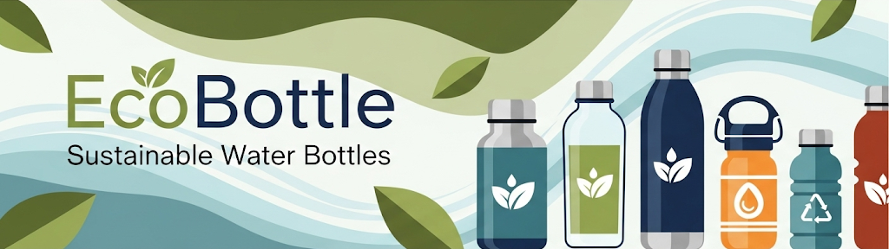

What is EcoBottle?
EcoBottle is a new kind of startup dedicated to reducing plastic waste by offering reusable, stylish, and highly durable water bottles. Our mission is simple: make it easier for people everywhere to stay hydrated while making a positive impact on the planet. Each EcoBottle is made from recycled materials, BPA-free, and designed to last for years.
Whether you're an athlete, a student, or simply someone who wants to live more sustainably, EcoBottle is designed to fit seamlessly into your lifestyle. With a range of sizes, colors, and accessories, our bottles are perfect for the office, the gym, or even a hiking trip. Every purchase supports global clean water initiatives, so you're not just buying a bottle-you're contributing to meaningful change.
Why Choose EcoBottle?
Traditional single-use plastic bottles contribute millions of tons of waste to our oceans and landfills each year. By switching to EcoBottle, you're helping cut down on that waste while enjoying a healthier, more convenient alternative. Our bottles are not only environmentally friendly but also engineered for performance, keeping your drinks hot or cold for hours.
EcoBottle focuses on simplicity and accessibility. You don't need to be an eco-expert to make a difference-just refill your bottle each day. Small habits like this add up to massive positive change for the environment. Plus, we've made sure our bottles are affordable and backed by a lifetime warranty to give you peace of mind.
Beyond functionality, EcoBottle is also about style and self-expression. With customizable sleeves and engraved options, you can make your EcoBottle truly your own. It's more than a product-it's a movement to shift how we think about everyday consumption.
Simple Steps to Get Started
- Order your EcoBottle: Visit our online shop and choose the size and style that best fits your lifestyle. We offer free shipping on all first-time orders.
- Start using it daily: Replace disposable bottles with your EcoBottle. Refill it at home, at work, or at refill stations around your city.
- Track your impact: Use our mobile app to log how many single-use bottles you've saved from landfills and oceans. You'll see your personal contribution to reducing plastic waste.
- Customize your bottle: Add a protective sleeve, a stainless-steel straw, or even a custom engraving to make it unique. Your EcoBottle can be as individual as you are.
- Spread the word: Encourage friends, family, and coworkers to join the movement. Every EcoBottle sold supports clean water projects in underserved communities worldwide.